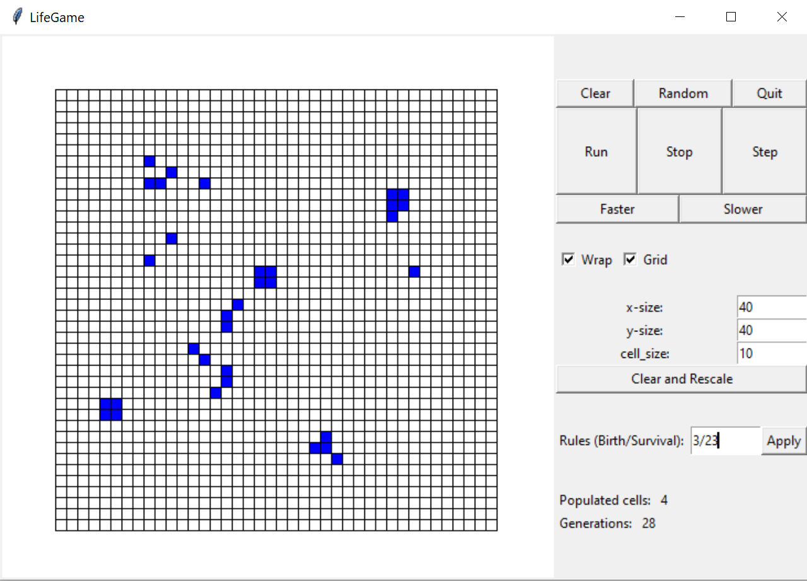

Plant blog

This is a full stack app. It uses MongoDB cloud for the database, NodeJS
and Express for the backend, and React for the front end.
Each plant tolerates a different range of temperatures. If some extreme weather
(defined as a condition that X plant doesn't tolerate)
is expected the following days, an alert is issued. For this data, I use openWeatherAPI (thanks!)
To Do App

Simple to do app in vanilla JS. No backend, tasks are stored in a
JSON file which has to be downloaded. Temporal changes and info is
stored in the browsers local storage.
This was more than an experiment to see if such an app could be made without
a backend than a real useful app.
Matrix Calculator

Perform classic matrix operations, such a adding, multiplying, but also
rotating.
No need for a
Number Converter

The first applet I ever made. Change from one number format to another
This was a fun way to learn about Javascript event listeners and DOM manipulation.
Life Game in Python

This was a college assignment. We were provided part of the TKinter module and
had to complete the rest of the logic. I started from scratch using Python 3
and as way to learn Tkinter.
Life Game in React

My first introduction to React was to remake an old program made in Python.
Simple front end desing, complex logic relationship in the program itself.